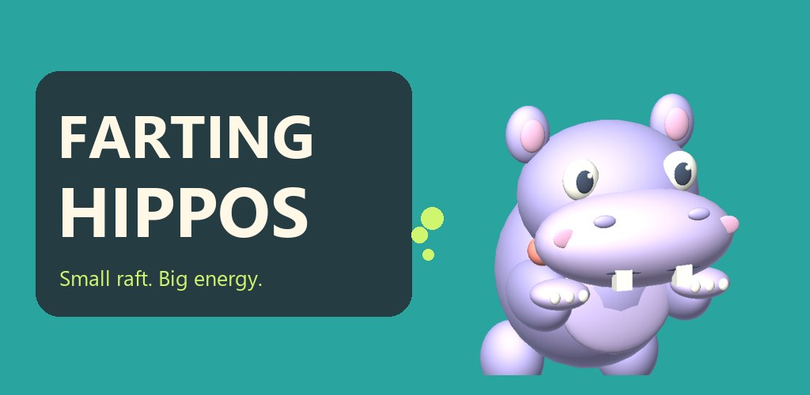
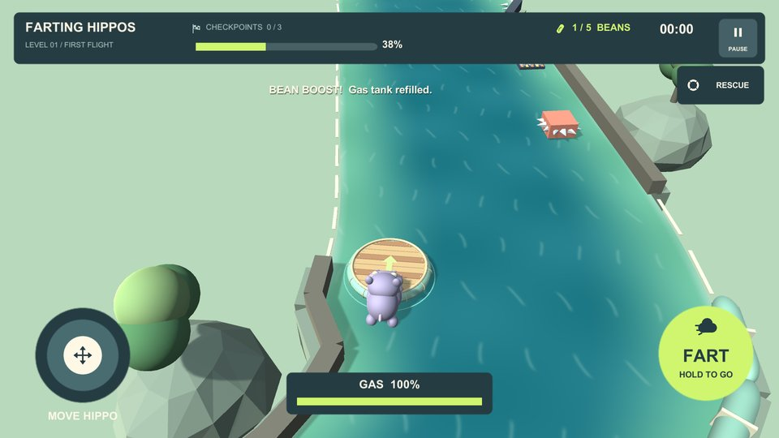
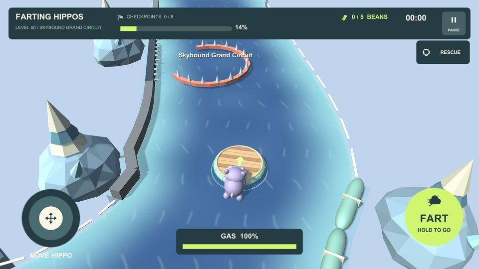
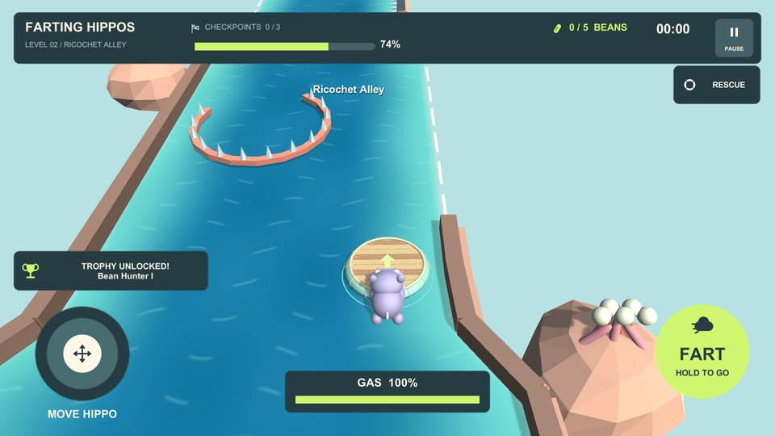
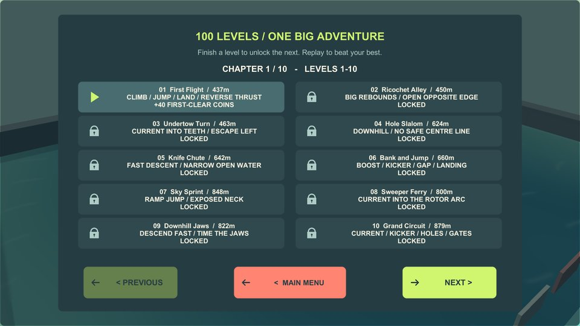
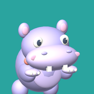

BRILLIANT THOUGHTS
Farting Hippos
Press kit - last updated 14 November 2026
Farting Hippos is an offline, single-player Android obstacle-course game. You move a hippo around the rim of a circular raft and hold FART to push the raft the opposite way. There is no brake: to slow down, move to the other side of the raft and push against your momentum.

Fact sheet
- Developer and publisher
- Brilliant Thoughts
- Platform
- Android, on Google Play (Android 8.0 and up)
- Release date
- 23 October 2026
- Current version
- 1.0.0 (checked 14 November 2026)
- Price
- Free. No advertisements, no in-app purchases and no account required.
- Mode
- Single-player, playable offline. Multiplayer is not available in this release.
- Content
- 100 obstacle courses in 10 chapters, 120 cosmetic choices and milestone trophies
- Content rating
- Everyone - Mild Fantasy Violence, Crude Humor (as shown on Google Play in the US; ratings vary by region)
- Data safety
- Developer declaration on Google Play: no data collected and no data shared with third parties
- Google Play
- play.google.com/store/apps/details?id=com.brilliantthoughts.fartinghippos
- Press and support
- brilliantthoughts2014@gmail.com
How it plays
- Move the hippo, not the raft. The on-screen joystick positions your hippo on the raft's rim. Hold FART and the raft is pushed the opposite way.
- Slowing down is a skill. There is no brake button. Move around the rim and fart against your momentum, or let the raft coast.
- Mind the gas. Holding FART drains a gas tank. Release to coast and refill, or collect beans along the course to top it up.
- Courses with variety. 100 courses with turns, ramps, jumps, rushing water, bouncing edges and moving hazards, plus checkpoints to recover when a float goes wrong.
- Your hippo, your look. Coins earned from adventure progress unlock outfits, hats, body colours and puff effects. Cosmetics never change the raft's physics.
Screenshots
In-game screenshots at 1920 x 1080. Select an image to open the full-resolution PNG.








Logo and art



Using these materials
The screenshots, icon and feature graphic on this page are provided for editorial coverage, reviews and listings of Farting Hippos. Please link to the Google Play listing above. For questions or additional media, email brilliantthoughts2014@gmail.com.